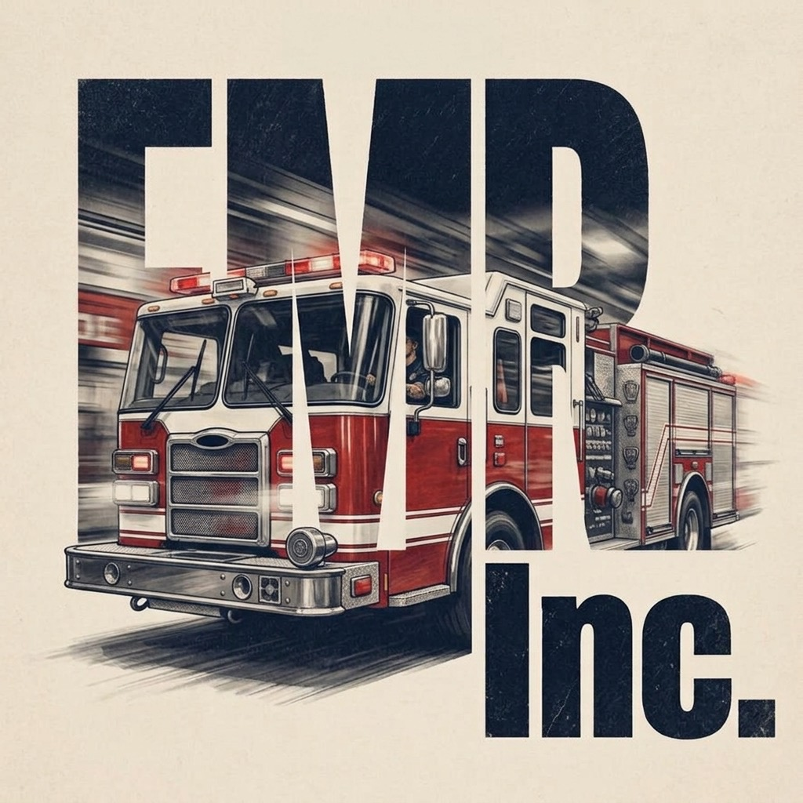

Emergency Medical Resolutions Inc.
The emergency services has a data problem.
The data that describes what happens on a call is generated by publicly funded agencies, about publicly occurring events, and it is being closed off. We build on what is still open, for the people actually riding the apparatus, and we argue for keeping it open.
